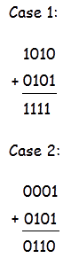
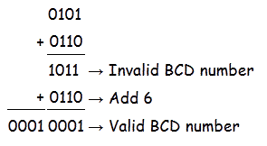
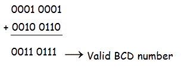
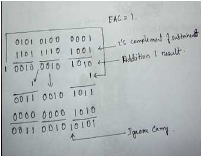
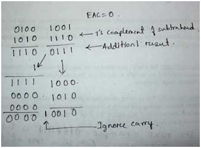
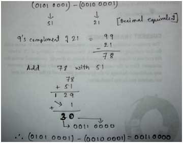

BCD or Binary Coded Decimal is that number system or code which has the binary numbers or digits to represent a decimal number.
A decimal number contains 10 digits (0-9). Now the equivalent binary numbers can be found out of these 10 decimal numbers. In case of BCD the binary number formed by four binary digits, will be the equivalent code for the given decimal digits. In BCD we can use the binary number from 0000-1001 only, which are the decimal equivalent from 0-9 respectively. Suppose if a number have single decimal digit then it’s equivalent Binary Coded Decimal will be the respective four binary digits of that decimal number and if the number contains two decimal digits then it’s equivalent BCD will be the respective eight binary of the given decimal number. Four for the first decimal digit and next four for the second decimal digit. It may be cleared from an example.
Let, (12)10 be the decimal number whose equivalent Binary coded decimal will be 00010010. Four bits from L.S.B is binary equivalent of 2 and next four is the binary equivalent of 1.
Table given below shows the binary and BCD codes for the decimal numbers 0 to 15.
From the table below, we can conclude that after 9 the decimal equivalent binary number is of four bit but in case of BCD it is an eight bit number. This is the main difference between Binary number and binary coded decimal. For 0 to 9 decimal numbers both binary and BCD is equal but when decimal number is more than one bit BCD differs from binary.
| Decimal number | Binary number | Binary Coded Decimal(BCD) |
|---|---|---|
| 0 | 0000 | 0000 |
| 1 | 0001 | 0001 |
| 2 | 0010 | 0010 |
| 3 | 0011 | 0011 |
| 4 | 0100 | 0100 |
| 5 | 0101 | 0101 |
| 6 | 0110 | 0110 |
| 7 | 0111 | 0111 |
| 8 | 1000 | 1000 |
| 9 | 1001 | 1001 |
| 10 | 1010 | 0001 0000 |
| 11 | 1011 | 0001 0001 |
| 12 | 1100 | 0001 0010 |
| 13 | 1101 | 0001 0011 |
| 14 | 1110 | 0001 0100 |
| 15 | 1111 | 0001 0101 |
BCD Addition
Like other number system in BCD arithmetical operation may be required. BCD is a numerical code which has several rules for addition. The rules are given below in three steps with an example to make the idea of BCD Addition clear.
a) At first the given number are to be added using the rule of binary. For example,

b) In second step we have to judge the result of addition. Here two cases are shown to describe the rules of BCD Addition. In case 1 the result of addition of two binary number is greater than 9, which is not valid for BCD number. But the result of addition in case 2 is less than 9, which is valid for BCD numbers.
c) If the four bit result of addition is greater than 9 and if a carry bit is present in the result then it is invalid and we have to add 6 whose binary equivalent is (0110)2 to the result of addition. Then the resultant that we would get will be a valid binary coded number. In case 1 the result was (1111)2, which is greater than 9 so we have to add 6 or (0110)2 to it.
(1111)2 + (0110)2 = 0001 0101 = 15. As you can see the result is valid in BCD.
But in case 2 the result was already valid BCD, so there is no need to add 6. This is how BCD Addition could be.
(1111)2 + (0110)2 = 0001 0101 = 15. As you can see the result is valid in BCD.
But in case 2 the result was already valid BCD, so there is no need to add 6. This is how BCD Addition could be.
Now a question may arrive that why 6 is being added to the addition result in case BCD Addition instead of any other numbers. It is done to skip the six invalid states of binary coded decimal i.e from 10 to 15 and again return to the BCD codes.
Now the idea of BCD Addition can be cleared from two more examples.
Example:1
Let 0101 is added with 0110.
Example:1
Let 0101 is added with 0110.

Check your self. (0101)2→(5)10 & (0110)2→(6)10
(5)10 + (6)10=(11)10
Example:2
Now let 0001 0011 is added to 0010 0110.

(0001 0001)BCD→(11)10, (0010 0110)BCD→(26)10 and (0011 0111)BCD→(37)10
(11)10
+ (26)10 = (37)10
So no need to add 6 as because both (0011)2 = (3)10 and (0111)2 = (7)10 are less than (9)10. This is the process of BCD Addition.
(11)10
+ (26)10 = (37)10
So no need to add 6 as because both (0011)2 = (3)10 and (0111)2 = (7)10 are less than (9)10. This is the process of BCD Addition.
BCD Subtraction
There are several methods of BCD Subtraction. BCD subtraction can be done by 1’s compliment method and 9’s compliment method or 10’s compliment method. Among all these methods 9’s compliment method or 10’s compliment method is the most easiest. We will clear our idea on both the methods of BCD Subtraction
Method of BCD Subtraction : 1
In 1st method we will do BCD Subtraction by 1’s compliment method. There are several steps for this method shown below. They are:-
a) At first 1’s compliment of the subtrahend is done.
b) Then the complimented subtrahend is added to the other number from which the subtraction is to be done. This is called adder 1.
c) Now in BCD Subtraction there is a term ‘EAC(end-around-carry)’ .If there is a carry i.e if EAC=1 the result of the subtraction is +ve and if EAC = 0 then the result is –ve . A table shown below gives the rules of EAC .
a) At first 1’s compliment of the subtrahend is done.
b) Then the complimented subtrahend is added to the other number from which the subtraction is to be done. This is called adder 1.
c) Now in BCD Subtraction there is a term ‘EAC(end-around-carry)’ .If there is a carry i.e if EAC=1 the result of the subtraction is +ve and if EAC = 0 then the result is –ve . A table shown below gives the rules of EAC .
| carry of individual groups | EAC = 1 | EAC = 0 |
|---|---|---|
| 1 | Transfer real result of adder 1 and add 0000 in adder 2 | Transfer 1’s compliment result of adder 1 and add 1010 in adder 2 |
| 0 | Transfer real result of adder 1 and add 1010 in adder 2 | Transfer 1’s compliment result of adder 1 and add 0000 to adder 2 |
d) In the final result if any carry bit occurs the it will be ignored.
Examples given below would make the idea clear of BCD Subtraction.
Examples given below would make the idea clear of BCD Subtraction.
Example: - 1
In this example 0010 0001 0110 is subtracted from 0101 0100 0001.
• At first 1’s compliment of the subtrahend is done, which is 1101 1110 1001 and is added to 0101 0100 0001. This step is called adder 1.
• Now after addition if any carry occurs then it will be added to the next group of numbers towards MSB. Then EAC will be examined. Here EAC = 1 . So the result of addition is positive and true result of adder 1 will be transferred to adder 2.
• Now notice from LSB. There are three groups of four bit numbers. 1010 is added 1011 which is the first group of numbers because it do not have any carry. The result of the addition is the final answer.
• Carry 1 will be ignored as it is from the rule.
• Now move to the next group of numbers. 0000 is added to 0010 and gives the result 0010. It is the final result again.
• Now again move to the next group here 0000 is also added to 0011 to give the final result 0011.
• You may have noticed that in this two groups 0000 is added, because result of first adder do not contain any carry. Thus the results of the adder 2 is the final result of BCD Subtraction.
• At first 1’s compliment of the subtrahend is done, which is 1101 1110 1001 and is added to 0101 0100 0001. This step is called adder 1.
• Now after addition if any carry occurs then it will be added to the next group of numbers towards MSB. Then EAC will be examined. Here EAC = 1 . So the result of addition is positive and true result of adder 1 will be transferred to adder 2.
• Now notice from LSB. There are three groups of four bit numbers. 1010 is added 1011 which is the first group of numbers because it do not have any carry. The result of the addition is the final answer.
• Carry 1 will be ignored as it is from the rule.
• Now move to the next group of numbers. 0000 is added to 0010 and gives the result 0010. It is the final result again.
• Now again move to the next group here 0000 is also added to 0011 to give the final result 0011.
• You may have noticed that in this two groups 0000 is added, because result of first adder do not contain any carry. Thus the results of the adder 2 is the final result of BCD Subtraction.

Therefore (0101 0100 0001)-(0010 0001 0110) = (0011 0010 0101)
Now you can check yourself. (0101 0100 0001) = (541)10
(0010 0001 0110) = 21610
(0011 0010 0101) = 32510
We know that 541 − 216 = 325, Thus we can say that our result of BCD Subtraction
is correct.
Now you can check yourself. (0101 0100 0001) = (541)10
(0010 0001 0110) = 21610
(0011 0010 0101) = 32510
We know that 541 − 216 = 325, Thus we can say that our result of BCD Subtraction
is correct.
Example: - 2
In this example let 0101 0001 be subtracted from 0100 1001.
• As per rule firstly 1’s compliment of the subtrahend is done. Then the addition is done and the result is checked. Here EAC = 0, so the overall result will be –ve.
• Now see the result of adder 1 from LSB. 1’s compliment value of 0111 is transferred to adder 2 and it is added with 1010 since no carry is added with it as per the rule. The answer is the final result.
•
Now move to the next result of adder 1 i.e 1110. Here 1 is added to it which is the carry of the previous result. Then it’ value is 1’s complimented i.e 0000 and it is added to 0000. Result of adder 2 is the final result. This is the final result of BCD Subtraction. (0100 1001)BCD − (0101 0001)BCD = ( − 0000 0010)BCD.
•
Now you can again check yourself. Decimal equivalent of the given numbers of subtraction is 49 and 51. Therefore 49 -51= -2. So our result is correct.
• As per rule firstly 1’s compliment of the subtrahend is done. Then the addition is done and the result is checked. Here EAC = 0, so the overall result will be –ve.
• Now see the result of adder 1 from LSB. 1’s compliment value of 0111 is transferred to adder 2 and it is added with 1010 since no carry is added with it as per the rule. The answer is the final result.
•
Now move to the next result of adder 1 i.e 1110. Here 1 is added to it which is the carry of the previous result. Then it’ value is 1’s complimented i.e 0000 and it is added to 0000. Result of adder 2 is the final result. This is the final result of BCD Subtraction. (0100 1001)BCD − (0101 0001)BCD = ( − 0000 0010)BCD.
•
Now you can again check yourself. Decimal equivalent of the given numbers of subtraction is 49 and 51. Therefore 49 -51= -2. So our result is correct.

Method of BCD Subtraction : 2
In 2nd method we will do BCD subtraction in 9’s compliment method.
• Here the method is very simple. At first the decimal equivalent of the given Binary Coded Decimal codes are found out.
• Then the 9’s compliment of the subtrahend is done and then that result is added to the number from which the subtraction is to be done.
• If there is any carry bit then the carry bit may be added to the result of the subtraction.
• Here the method is very simple. At first the decimal equivalent of the given Binary Coded Decimal codes are found out.
• Then the 9’s compliment of the subtrahend is done and then that result is added to the number from which the subtraction is to be done.
• If there is any carry bit then the carry bit may be added to the result of the subtraction.
Idea may be cleared from an example given below.
Let ( 0101 0001)−(0010 0001) be the given subtraction.
• As we can see 51 and 21 are the decimal value of the given BCD codes. Then the 9’s compliment of the subtrahend is done i.e 99 − 21 = 78.
• This complimented value is added with the 51. i.e 51 + 78= 129.
•
In this result the MSB i.e 1 is the carry. This carry will be added to 29. Therefore 29+1=30, which is the final answer of BCD Subtraction.
• The decimal result will be changed into BCD codes to get the result in BCD. Therefore from the example we can conclude the final result of BCD Subtraction i.e (0101 0001)BCD − (0010 0001)BCD = (0011 0000)BCD
Let ( 0101 0001)−(0010 0001) be the given subtraction.
• As we can see 51 and 21 are the decimal value of the given BCD codes. Then the 9’s compliment of the subtrahend is done i.e 99 − 21 = 78.
• This complimented value is added with the 51. i.e 51 + 78= 129.
•
In this result the MSB i.e 1 is the carry. This carry will be added to 29. Therefore 29+1=30, which is the final answer of BCD Subtraction.
• The decimal result will be changed into BCD codes to get the result in BCD. Therefore from the example we can conclude the final result of BCD Subtraction i.e (0101 0001)BCD − (0010 0001)BCD = (0011 0000)BCD

Binary Coded Decimal Subtraction using 10’s compliment is same as in case of 9’s compliment, here the only difference is that instead of 9’s compliment we have to do 10’s compliment of the subtrahend.
BCD Comversion
BCD conversion is very simple. In case of BCD conversion at first the decimal equivalent of the BCD codes are found out and then that decimal number can be changed to any other number system as required. To know the methods of conversion of number system you may read the topic binary number system.
 by
by